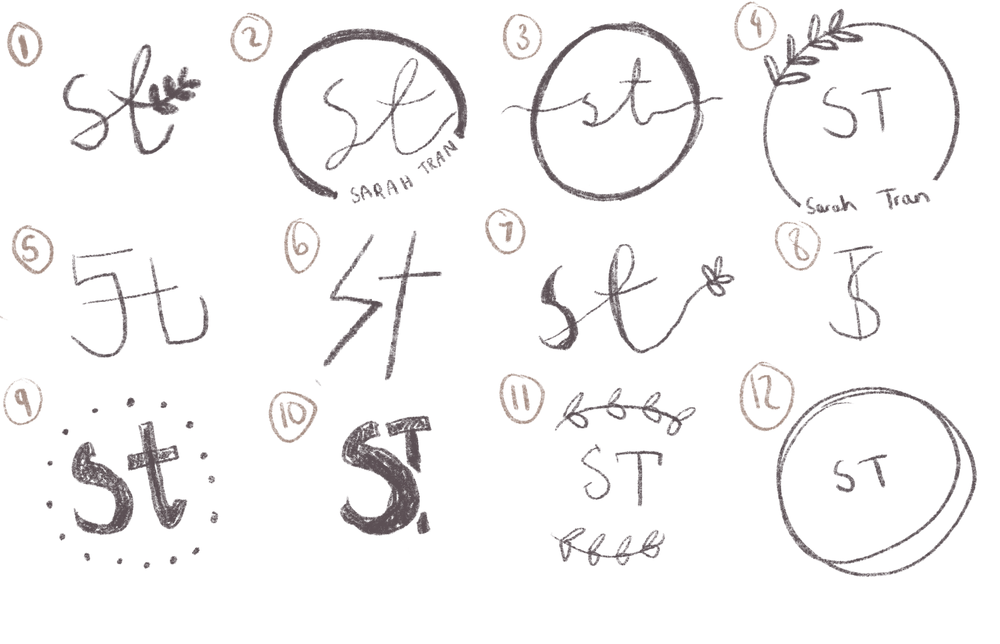
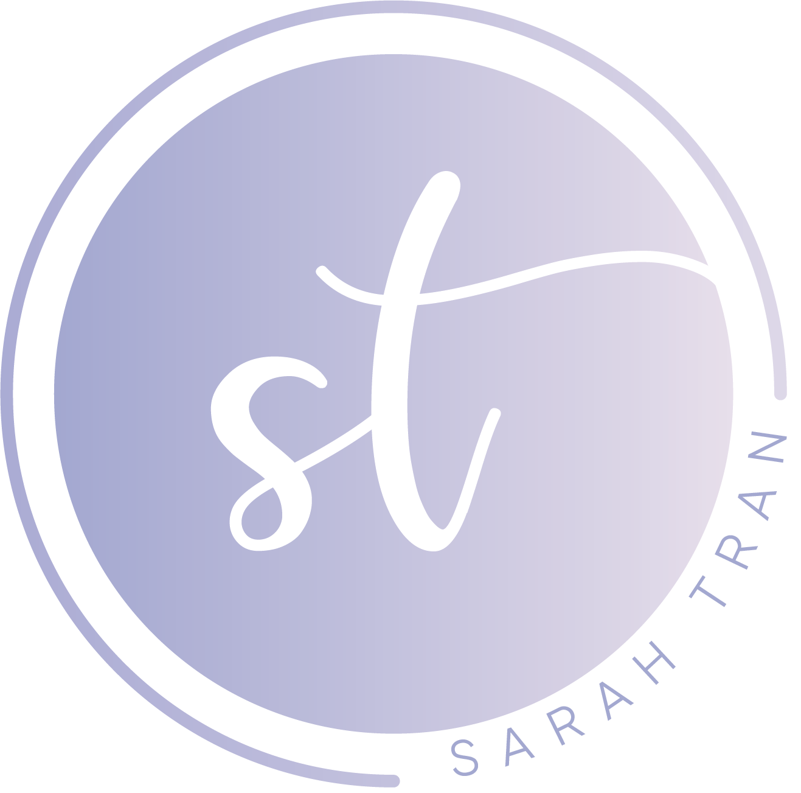

Overview
I decided to make own personal brand identity as a way to practise my design and coding skills. In addition, it allows me to show future employers and clients my skills and qualities that I have. This was one of my first projects.
Logo
It was important for me to create a logo that suits my style. My favourite colour is lilac and lavender and my favourite decorative colour is white. All these colours are shown in the logo. The cursive 'st' is to make the logo appear more feminine. I also really like the use of circles and I wanted my logo to be simple and minimalistic. Here are some sketches:

I decided I liked #2 the best but I wanted to make some adjustments to the design and changed it a bit when creating it in Illustrator.

Website
The website that you are currently on is my portfolio! Its purpose is to show and represent my skills and to allow people to reach out to me.
Design
I wanted to create a website that would have all the modern web conventions: responsive design, lazy loading and interactions that are dynamic.
I wanted to be experimental and try out different techniques, so I researched through several websites for inspiration. I put together a list of elements from different websites that inspired me. For instance, I particularly liked having navigation dots, the one page scroll effect and having two column pages.
Illustrations
The illustrations were all drawn by me, as I wanted to explore and practise using vectors in Adobe Illustrator. I learned that vector graphics are advantageous to use on websites as they provide sharp looking images and are excellent quality.
Tools
This is one of the first few websites I have developed so I was using this project to learn the basics and fundamentals of HTML/CSS/JS. Due to the website being very content heavy and still a beginner, I decided not to use a popular framework such as React or Vue.js. I wanted it to load fast and to merely be a simple website. However, in the future, I may remake this using a framework.
Key Takeaways
This is one of the first few websites I have actually designed and developed. Therefore, I feel extremely accomplished and feel as though I have learned a lot. I consider myself more of a designer and I have not done too much with code yet and still have a lot to learn.